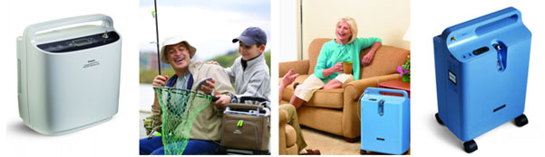
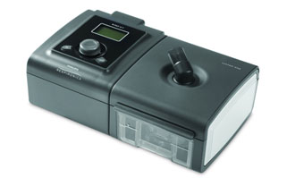

营造良好环境
戒烟、远离粉尘及有害气体的吸入
小编推荐：飞利浦拥有多款空气净化器，抵挡雾霾，不再担心家人的呼吸受到威胁。
药物治疗
口服/无话吸入祛痰药、支气管扩张剂、抗胆碱药物等。
小编推荐：关于药物治疗，配合雾化器使用，疗效更佳哦！飞利浦伟康Sami小海豹医用压缩式雾化器——造型小巧可爱，适用于儿童和成人。经认证的医用级雾化器，配备高性能鼓风涡轮，强劲的雾化驱动力，即可满足医院长期使用，也可满足家庭雾化治疗。
家庭氧疗
提高体内血样饱和度至90%以上，提高生活质量和生存率，降低住院率。
小编推荐：作为疗养界的白富美，飞利浦伟康SimplyGo便携式制氧机拥有三种供养模式，满足不同情况下的供养需求，外出携带使用妥妥地！在家中吸氧，则可使用EverFlo医用级5L制氧机，是长期家庭氧疗必备之选哦！“白富美”终于找到了“经济适用男”啊！
肺康复锻炼
善患者活动能力，生活更加健康。
小编推荐：腹式呼吸操通过增强膈肌活动，增大通气，从而达到改善肺功能的目的。

家庭无创通气
家庭无创正压通气治疗，是指慢阻肺患者病情未定出院后，在家继续使用的小型面罩式正压呼吸机进行辅助通气治疗。临床研究证明，家庭无创通气治疗对中重度COPD患者有许多好处，它可以帮助患者改善机体缺氧与二氧化碳潴留，改善心功能。特别是还可以帮助患者提高康复训练的效果，有效减少急性发作和住院次数，提高生活质量。

小编推荐：飞利浦伟康智能选型家用无创呼吸机BiPAP S/T 30，适合各类慢呼衰患者，最高压力水平达30厘米水柱，能保证患者长期家庭使用始终有效，不用担心疾病程度升级后同时升级呼吸机。